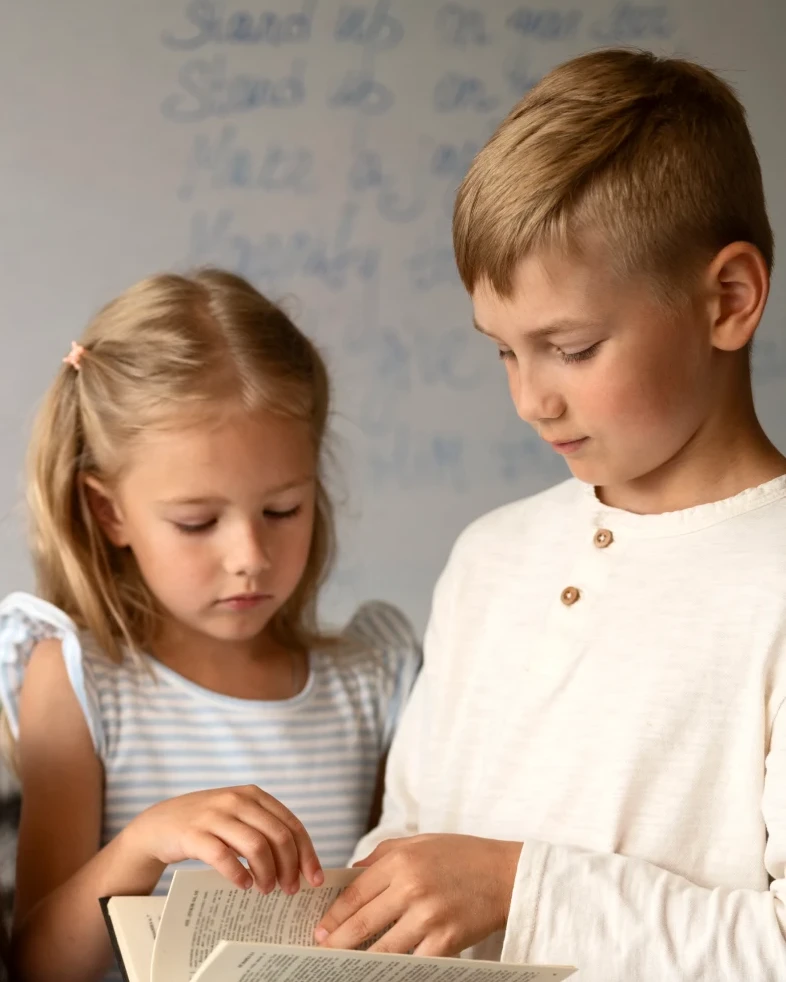

Ciência, descobertas
e fé em um só lugar
Um clube para crianças de 9 a 13 anos que investigam o mundo com pensamento crítico.
clubecriacionista.com
Membro pesquisador
Um clube para crianças de 9 a 13 anos que investigam o mundo com pensamento crítico.
